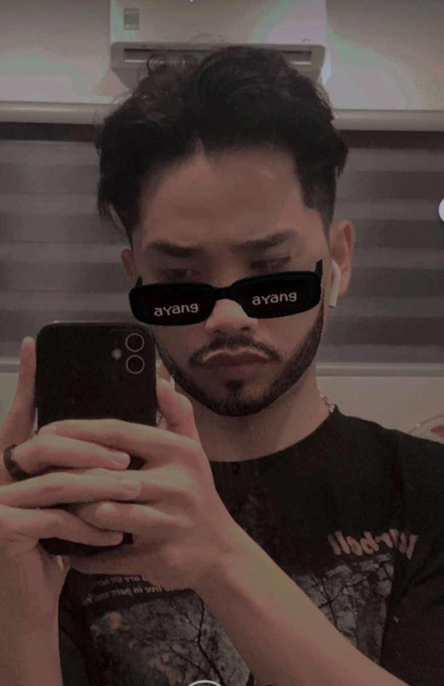

|
|
||||
|---|---|---|---|---|
|  | Thông Tin Cá NhânBản Thân
Họ Tên: Vương Quốc Khánh
Sinh Ngày: 14/03/2004 Giới Tính: Nam Liên Hệ: 0905992816 And Facebook Chiều Cao: 1m78 Quê Quán
|
Thông tin về trườngTrường Đại học Đại Nam được thành lập tại Hà Nội và hoạt động theo Quy chế trường đại học tư thục theo Quyết định số 1535/QĐ-TTg ngày 14 tháng 11 năm 2007 của Thủ tướng Chính phủ.[1] Ban đầu trường có 8 khoa đào tạo bao gồm các chuyên ngành như: Tài chính, Ngân hàng, Kế toán, Quản trị kinh doanh, Công nghệ thông tin, Xây dựng, Tiếng Anh, Tiếng Trung, Quan hệ công chúng và truyền thông. Từ năm 2013 đến 2019, trường lần lượt mở thêm các ngành Dược học, Luật kinh tế, Quản trị dịch vụ du lịch và lữ hành, Đông phương học (chuyên ngành Nhật Bản học). Ngày 20 tháng 11 năm 2019, trường tổ chức kỷ niệm ngày thành lập trường và nhận chứng nhận Giấy Chứng nhận kiểm định chất lượng cơ sở giáo dục và trở thành trường đại học thứ 8 được công nhận theo bộ tiêu chuẩn đánh giá mới của Bộ Giáo dục và Đào tạo.[2][3][4] Ngày 22 ngày 5 năm 2020, Trường chính thức được Bộ Giáo dục và Đào tạo cho phép Trường đại học Đại Nam đào tạo ngành Ngôn ngữ Hàn Quốc trình độ đại học. Khoa có liên kết hợp tác với Hiệp hội các doanh nghiệp vừa và nhỏ Hàn Quốc, Hiệp hội Doanh nhân và Đầu tư Việt Nam - Hàn Quốc, Các công ty Hàn Quốc tại Việt Nam như: Công ty LG Electronics Việt Nam, Công ty Delta E&C Việt Nam; Công ty Heesung Việt Nam; Công ty Miso INC Korea,… Năm 2021, trường mở thêm ngành Truyền thông đa phương tiện (TS Trần Bảo Khánh[5][6] - Nguyên hiệu trưởng trường Cao đẳng Truyền Hình làm trưởng khoa và PGS.TS Nguyễn Thanh Huyền[7] cố vấn chuyên môn[8]), Công nghệ kỹ thuật ô tô và Thương mại điện tử trình độ đại học.
|
|
|